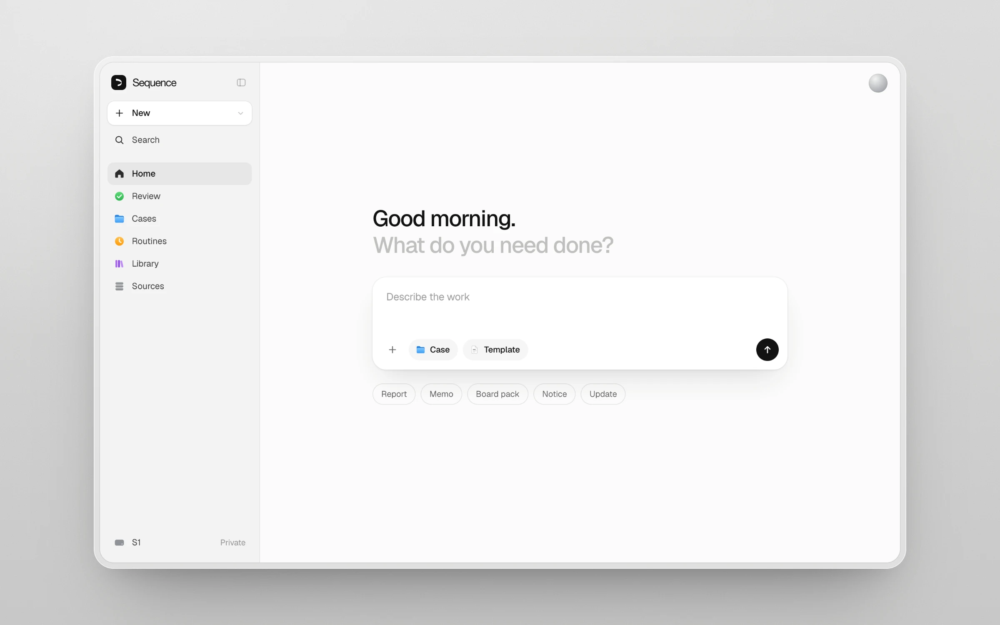

Build the future of intelligence.
From the start
Join while the product, the company and the way we work are still being decided.
Software and hardware
Sequence is an engine and a computer. Most roles touch both.
Work that ships
Pilots run inside real companies, producing work that people sign.

Open roles
Engineering
Founding Engineer, AI
You’ll build the engine at the centre of Sequence: how it reads a company’s data, plans a piece of work, drafts it with frontier models, and checks every citation and figure before a person sees it.
You have shipped systems built on language models to real users, and you care more about a correct answer than a clever demo.
Engineering
Founding Engineer, Product
You’ll build the app people work in every day: starting work, following a case, reviewing a draft and signing it. It has to be fast, calm and exact.
You have built product end to end, from the data model to the last detail of the interface, and you notice when something is a few pixels or a few milliseconds off.
Engineering
Founding Engineer, Integrations
You’ll connect Sequence to the systems companies already run on, starting with SharePoint, OneDrive, Outlook, Google Drive and Gmail, and keep each company’s model current as its data changes.
You have worked with enterprise APIs, permissions and large, messy data, and you know a connector is only finished when it is reliable.
Engineering
Founding Engineer, S1
You’ll own the software on S1, the computer that runs Sequence on a customer’s premises: the operating system, security, remote updates and monitoring across every unit in the field.
You have run Linux systems in production, ideally on hardware you could touch, and you treat a customer’s security team as the first reviewer of your work.
Research
Research Engineer, On-Premises Models
You’ll make models run well on S1 itself, so sensitive work can be processed without leaving the building: choosing open models, tuning how they run, and serving them fast within the limits of one machine.
You have evaluated or served models yourself, and you measure quality on real tasks, not on benchmarks alone.
Design
Founding Product Designer
You’ll design how people give Sequence work and sign what it produces, across the app, S1 and the website. What you set becomes the standard the rest of the product follows.
You have shipped product work you can show, strong typography, and the judgement to remove what a screen doesn’t need.
Operations
Forward Deployed Engineer
You’ll run pilots inside customer companies: install S1, connect their sources, set up the first routines with their team, and bring what you learn straight back into the product.
You are an engineer who is at ease in a finance or legal department, and you like being the person who makes it work on the day.
Operations
Hardware Operations Lead
You’ll take S1 from parts to a running computer on a customer’s premises: sourcing, assembly, testing, shipping and installation, then keeping every unit in the field healthy.
You have brought a physical product to customers before, and you are comfortable owning suppliers, logistics and quality at once.
Sales
Founding Account Executive
You’ll find and close Sequence’s first pilots with banks, private equity firms and the head offices of industrial groups, and turn successful pilots into subscriptions.
You have sold software to large companies, you can talk to a CFO and a head of IT in the same meeting, and you want to write the sales playbook yourself.
No roles match. Clear the search or pick another team.